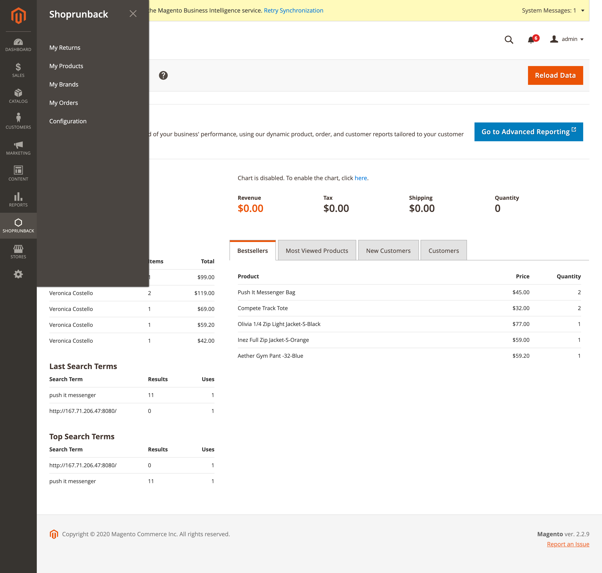
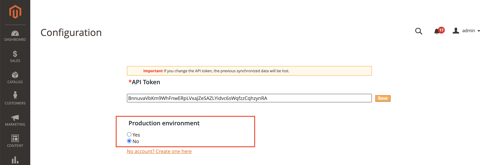
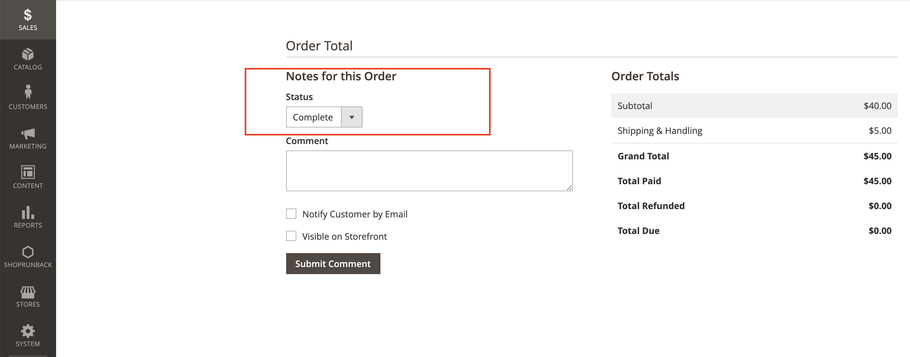
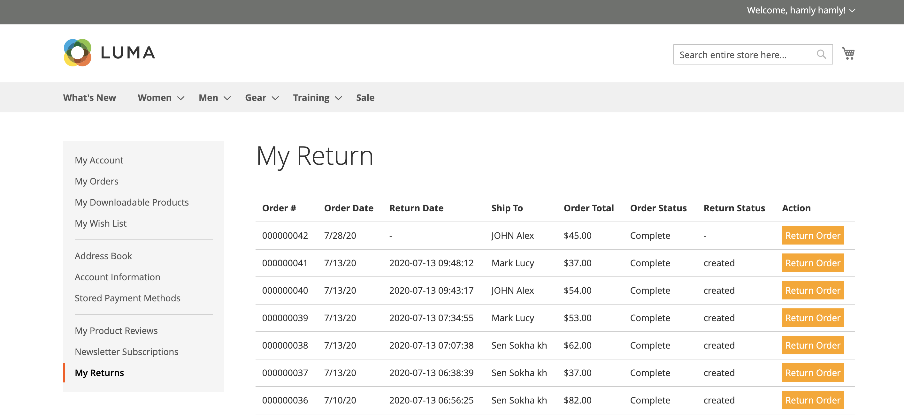
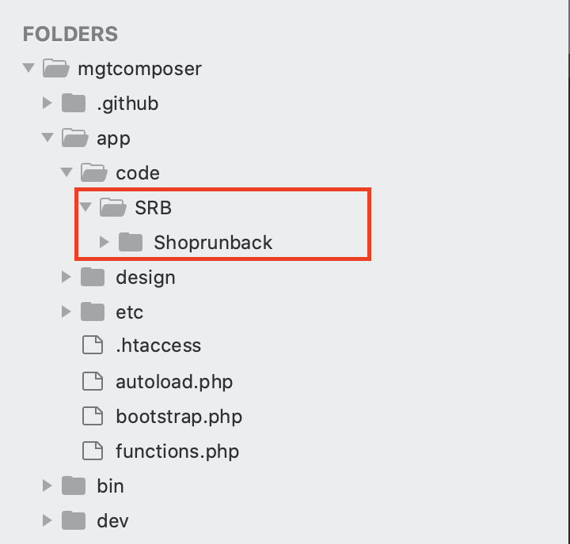

Introduction
Welcome to the documentation for the ShopRunBack module for Magento2. This module will help you to manage your returns with ShopRunBack while staying on your own website.
If you have any question, please send an email to: tech_at_shoprunback.com
Support Version
The module is compatible with all versions starting from 2.0
Installing the Module
1. Create your own ShopRunBack account
First of all, you must create your own ShopRunBack account here. here
For your store configuration, please contact your account manager who will guide you through the process
2. How to get the Module
Contact the ShopRunBack Team to get the source code of the module or you can download from here
First, you should copy it’s code to the required directory (project_name/app/code): The left panel shows here the basic listing of the file with a module. The right panel — Magento 2 codebase..
Basically, the Install folder content should be copied to the app/code/ directory

3. Install Command line
Magento CLI provides a large number of useful console commands to manage the store. And you can get the list of these commands by running: php bin/magento. But now we need to use only one:
php bin/magento setup:upgrade
FOR LOCAL DEVELOPMENT
Copy module code to to the required directory: (app/code/ ) and run following command
php -dmemory_limit=20G bin/magento setup:upgrade
php -dmemory_limit=20G bin/magento setup:di:compile
php -dmemory_limit=20G bin/magento setup:static-content:deploy -f
php bin/magento cache:flush && php bin/magento cache:clean (For clean catch)
Configuration
After installing the module successfully you will see an icon menu named SHOPRUNBACK.
Click on it and click on the configuration menu.

paste your token and click on save button . done

Synchronize your data
To synchronize an element, click on its corresponding Synchronize button.

Environment
There are 2 modes:
- Sandbox: It is a test environment. The data on this environment is reset every monday.
- Production: It is where your customers’ return requests are made.

Use the Module
How do my customers create a return request?
Any customer can create a return request once an order is at least Shipped and invoiced. Then, they have a button to create a return request on the details of the order.
(The screenshot shows the magento order status is complete)

To make a return , first you need to go to the login page and login with your account.

Then, you can start to purchase a product. After completing the order go to your return page (/shoprunback/shipback/index). Once you have completed your purchase, the order status is pending and the return button is not available so you cannot return the product until the admin submit invoice and shipment.

Once the admin is done submitting the invoice and shipment, the “Return Order” button will be available.

To see the list of return, click on button Return Order then it will create an shipment and redirect to ShopRunBack return path. After completing your return on the shoprunback platform the Return Date and Return Status will update.

Uninstall the Module
To remove the module just remove the code file from your project directory. Goto to the app/code/ directory 